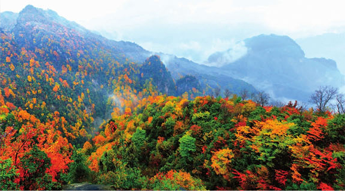
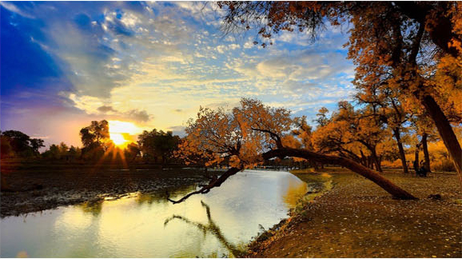
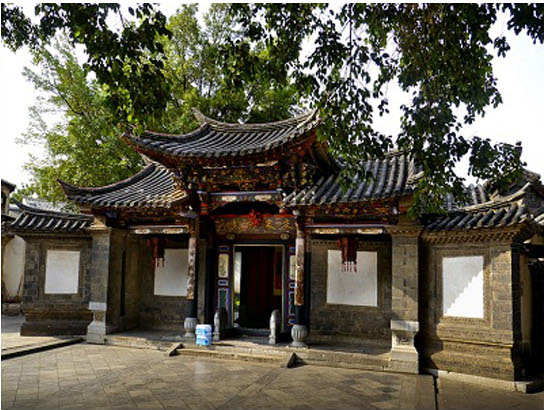
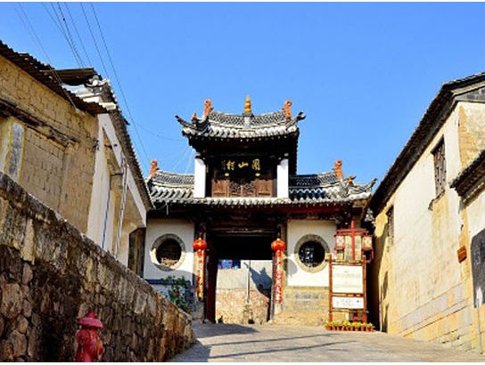
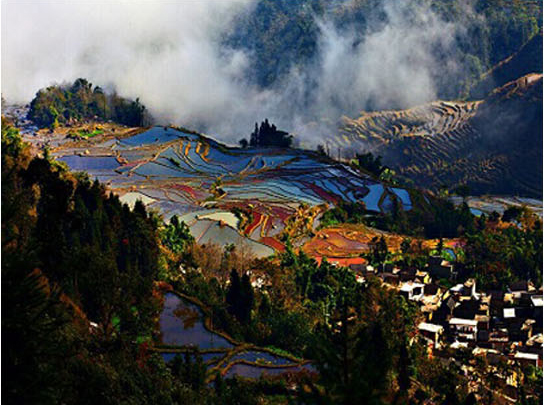

￥4580/人起
行程特色
- 美 景：汉族青砖四合大院--元阳梯田--东川红土地
- 团队用餐：全程中式午晚餐，五菜一汤
- 住宿安排：温馨的家
- 安心旅行：赠送最高保额30万境外救援保险，让您玩得开心
- 优秀团队：精选带团经验丰富，具备专业讲解知识的导游团队
- 
- 
行程简介
第一天 | 各地——昆明
餐食：早餐 住宿：昆明
各地飞往历史文化名城云南昆明(注意：请在航班起飞前90分钟到达飞机场) 到达昆明后，可自行前往昆明的石林、九乡、滇池等特色景区游玩。18:00 酒店大厅集合，由活动方安排分车及安排行前说明交流会。 温馨提示：大交通可以委托老陈自驾机票客服小刘（13382069500）预定， 也可以自行预定，订票 请和领队确认名额。
第二天 | 昆明--建水
餐食：早餐 住宿：建水
酒店早餐后，前往由传统的汉族青砖四合大院、彝族土掌房和汉彝结合的 瓦檐土掌房三类建筑风格结合的民居世界--团山居民，团山至今还保存着的 完整古村落整体格局，有着滇南乡村特色风貌与传统社会人文环境的原生态 特点，世所罕见，极为珍贵。到达建水县城之后，前往参观朱家花园，有一组 规模宏大的清代居民建筑，有“滇南大观园”之誉！房间内的床，凳，桌，椅 均采用紫木雕刻，体现清代风格，门僮及导游小姐的服饰和接待客人的清式礼 仪，让人有恍惚置身百年前历史生活的感受。 
第三天 | 建水--元阳
餐食：早餐 住宿：元阳
酒店早餐后，前往中国最美的元阳梯田。元阳哈尼梯田主要有三大核心区组-- 【坝达景区】、【老虎嘴景区】、【多依树景区】，去老虎嘴俯瞰梯田是很好 的选择，6000多亩梯田分布于深谷，像一朵巨大的花蕊，老虎嘴被美国摄影家 称为世界上最壮丽的田园风光；晚上看夕阳，则应该选择坝达景区，在龙树坝 拍日落也是不错的选择；感受大自然的鬼斧神功，19万亩映着蓝天的哈尼梯田 就在你的脚下，哈尼梯田有一千多年的历史，至今科学家仍无法解答，这样大 的面积，在这崇山峻岭中是怎样挖掘的。  